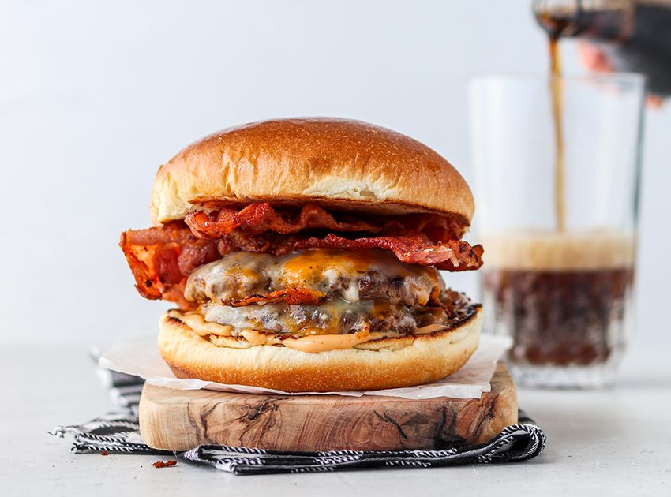
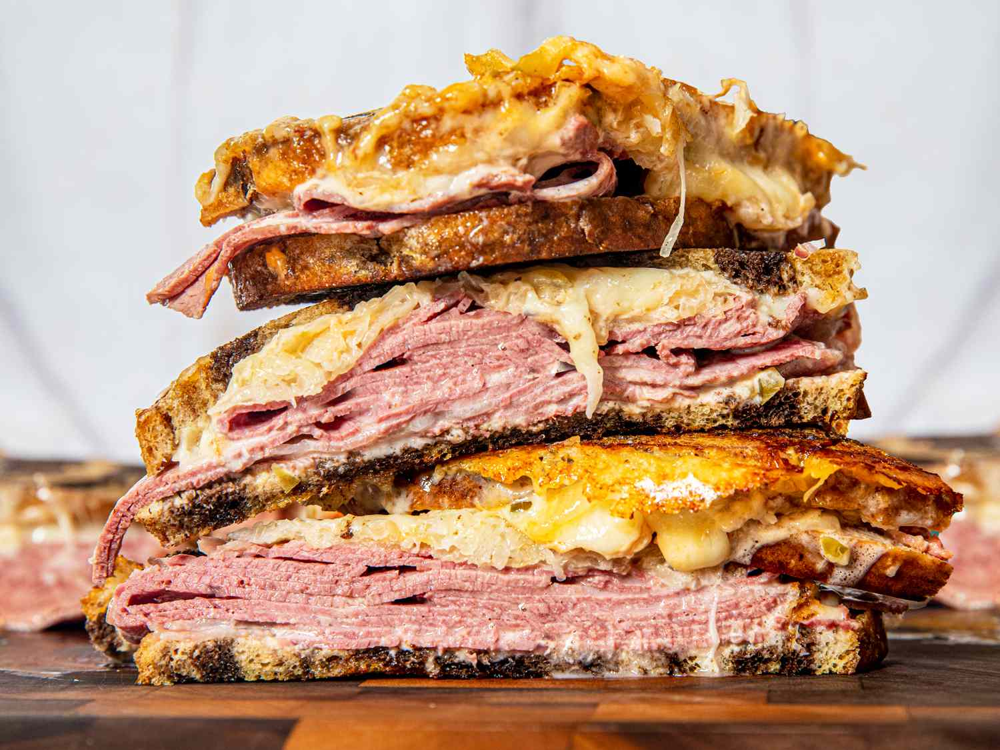
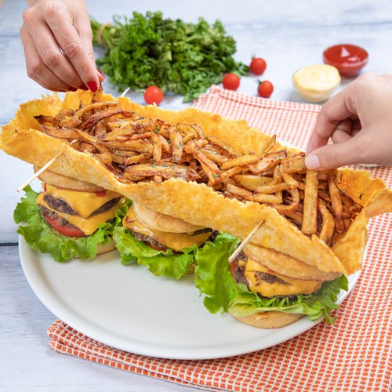
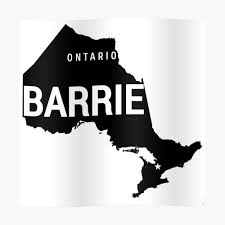

All Day Breakfast · Lunch · Dinner
531 Bryne Dr
Barrie, ON L4N 9P7
Mon–Sat
8:30am – 8pm
Sunday
8:30am – 4pm
Comfort food, country bistro warmth, and a space that feels like home.
Welcome to Simmering Kettle — your neighborhood gathering spot in Barrie for hearty breakfasts, stacked sandwiches, hand-crafted burgers, and familiar favorites served all day.


Classic comfort dishes, polished presentation, and a friendly online experience.
Simmering Kettle brings together classic comfort food, welcoming service, and a relaxed atmosphere that makes every visit feel easy and familiar. Whether you're stopping in for breakfast, brunch, lunch, or coffee, we’re here to serve fresh favorites made for sharing and coming back to.
Neighborhood favorite
Built around casual comfort, generous portions, and the kind of menu that works for breakfast, lunch, or dinner.
Breakfast, brunch, and lunch favourites
From hearty morning classics to satisfying lunch plates, Simmering Kettle offers a menu built around comforting, familiar meals made fresh and served in a warm, welcoming setting.
Private events and catering made simple
Whether you're planning a gathering, office lunch, or family celebration, Simmering Kettle offers flexible event space, custom menu options, and a friendly team ready to help make it easy.
A better first impression
A warm welcome to Simmering Kettle.
Simmering Kettle is known for comforting food, welcoming service, and a relaxed atmosphere. This opening section should give guests that same warm first impression while introducing the restaurant in a clear and inviting way.


Open all week and easy to find.
Monday8:30am – 8pm
Tuesday8:30am – 8pm
Wednesday8:30am – 8pm
Thursday8:30am – 8pm
Friday8:30am – 8pm
Saturday8:30am – 8pm
Sunday8:30am – 4pm
531 Bryne Dr, Barrie, ON L4N 9P7
Conveniently located near Highway 400 with plenty of free parking, making it easy for casual breakfasts, dinner meetups, private events, and take-out runs.
Host your next gathering in a warm, flexible space.
Simmering Kettle is available for private events with custom menus, room for up to 50 guests, complimentary Wi‑Fi, and a setup designed for easy hosting.
- Custom menu planning for your event
- Main room seating for up to 50 guests
- Convenient access and free parking
Menus tailored to your group, budget, and occasion.
From office lunches to celebrations, the catering offering is positioned around flexible menu planning that can be built around your preferences and budget.
- Custom menu guidance
- Great for office, family, and group events
- Easy contact flow for take-out or catering inquiries
Contact
Ready to book, order, or ask a question?
Call the restaurant directly for reservations, private event details, catering requests, or take-out.